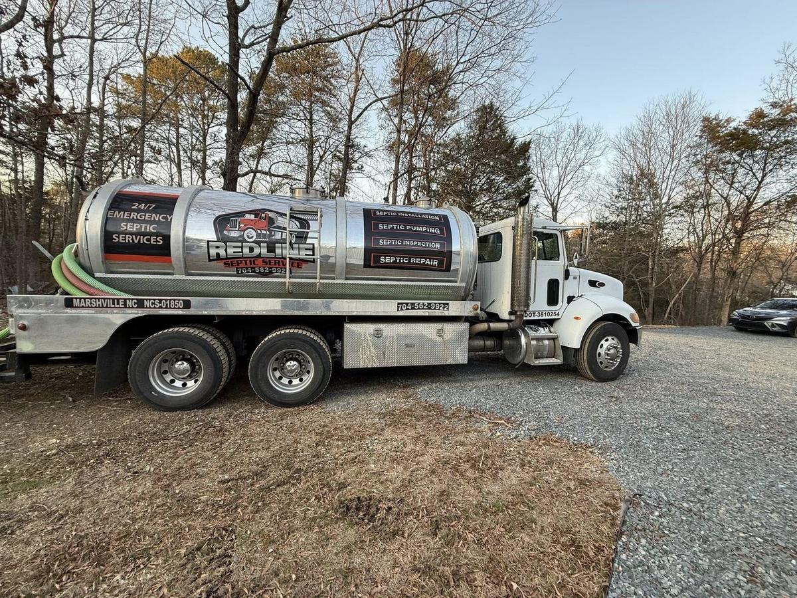

Septic Tank Pumping in Matthews, NC
Flat-rate septic pumping for Matthews' outlying private septic properties — free quotes, same-day scheduling, no deposit required. NC License #9788.

Septic Pumping for Matthews' Private Systems
Much of central Matthews is on public sewer, but outlying homes on larger lots — especially toward the Union County, Stallings, and Mint Hill borders — often still rely on private septic systems. If your property is one of them, regular pumping is the difference between routine maintenance and an expensive emergency.
Redline is based in nearby Monroe, NC and pumps tanks throughout outlying Matthews as part of our regular Mecklenburg County service area.
What a Matthews Pump-Out Involves
Septic or Sewer? Confirming What You Have
Because sewer coverage in Matthews is uneven, plenty of homeowners aren't sure which system serves their property until something goes wrong. If your neighborhood was developed before nearby sewer lines were extended, or you've never had a sewer utility charge on your water bill, there's a good chance you're on private septic. If you're not sure, tell us your address when you call and we can usually help confirm before scheduling.
Near me in Matthews: Redline is based in nearby Monroe and pumps tanks throughout outlying Matthews with same-day scheduling on most calls. Call (704) 562-9922 to check availability.
Frequently Asked Questions
More About Septic Services in Matthews
See our Matthews septic services page for pumping, inspections, repair, and maintenance, or the septic pumping service page for process details and a free quote. Nearby: Mint Hill septic services · Stallings septic services · Matthews septic repair